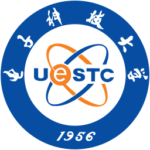

CoSAG: Compact Semantic Anchor Gaussians via Training-Free Rate-Distortion Coding
Spatial anchors let nearby Gaussians share semantic features. The resulting fields use 37–76× less storage than LangSplatV2 on the evaluated datasets.
PhD Student in Computer Science and TechnologyPeking University Shenzhen Graduate School
I study how machines build a 3D understanding of the world and use it to plan their next move. My research spans 3D vision, autonomous driving, and world action models.

Spatial anchors let nearby Gaussians share semantic features. The resulting fields use 37–76× less storage than LangSplatV2 on the evaluated datasets.

How much should a car trust what its neighbors see? CoDS estimates local reliability for joint 3D detection and bird’s-eye-view segmentation.

EA3D builds a 3D scene as video arrives, so users can select and extract individual objects while reconstruction is still underway.

Research Intern, Intelligent Automotive Solutions
Driving world models for scene geometry, video prediction, and trajectory planning.
Research Intern
Online 3D reconstruction and semantic object extraction from streaming video for EA3D.
Direct-entry PhD student in Computer Science and Technology

BEng in Software Engineering
School of Information and Software Engineering